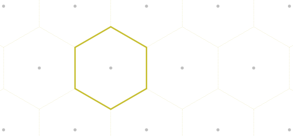
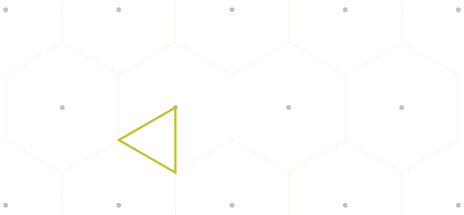

Brillouin Zone
- class brille._brille.BrillouinZone(*args, **kwargs)
Construct and hold a first Brillouin zone and, optionally and by default, an irreducible Brillouin zone.
The region closer to a given lattice point than to any other is the Wigner-Seitz cell of that lattice. The same construction is one possible first Brillouin zone of a reciprocal lattice and is used within
brille. For example, a two-dimensional hexagonal lattice has a first Brillouin zone which is a hexagon:
Since all physical properties of a crystal must have the same periodicity as its lattice, the powerful feature of the first Brillouin zone is that it encompasses a region of reciprocal space which must fully represent all of reciprocal space.
Most crystals contain rotational or rotoinversion symmetries in addition to the translational ones which give rise to the first Brillouin zone. These symmetries are the pointgroup of the lattice and enforce that the properties of the crystal also have the same symmetry. The first Brillouin zone, therefore, typically contains redundant information.
An irreducible Brillouin zone is a subsection of the first Brillouin zone which contains the minimal part required to have only unique crystal properties. This class can find an irreducible Brillouin zone for any crystal lattice. In the example of the hexagonal lattice there are six equivalent irreducible Brillouin zones one of which is:

- Parameters:
lattice (
brille._brille.Reciprocal) – The reciprocal space lattice for which a Brillouin zone will be founduse_primitive (bool) – If the provided
brille._brille.Reciprocallattice is a conventional Bravais lattice, this parameter controls whether the equivalent primitive Bravais lattice should be used to find the first Brillouin zone. This isTrueby default and should only be modified for testing purposes.search_length (int) – The Wigner-Seitz construction of the first Brillouin zone finds the volume of space closer to a chosen reciprocal lattice point than any other reciprocal lattice point. This is accomplished by successively dividing the space by planes halfway between the chosen point and a subset of all other planes. The subset used is controlled by search_length and is every unique \((\pm s_i\,0\,0)\), \((0\,\pm s_j\,0)\), \((0\,0\,\pm s_k)\), \((\pm s_i\,\pm s_j\,0)\), \((\pm s_i\,0\,\pm s_k)\), \((0\,\pm s_j\,\pm s_k)\), \((\pm s_i\,\pm s_j\,\pm s_k)\) for \(1 \le s_\alpha \le\) search_length. If the reciprocal lattice is primitive then the default search_length of
1should always give the correct first Brillouin zone. For extra assurance that the correct first Brillouin zone is found, the procedure is internally repeated with search_length incremented by one and an error is raised if the two constructed polyhedra have different volumes.time_reversal_symmetry (bool) – Controls whether time reversal symmetry should be added to pointgroups lacking space inversion. This affects the found irreducible Brillouin zone for such systems. To avoid inadvertently adding time reversal symmetry when it is not appropriate, this is
Falseby default.wedge_search (bool) – Controls whether an irreducible Brillouin zone should be found. With this set to
Falsethe returnedbrille._brille.BrillouinZonewill only contain the first Brillouin zone. IfTruethe pointgroup symmetry operations will be used to identify an irreducible Brillouin zone as well. If the provided lattice’s parameters do not match the symmetry of the pointgroup (e.g., a lattice which should be tetragonal like \(I4/mmm\) but constructed with \(\gamma=120^\circ\)) the algorithm will fail to find an appropriate irreducible Brillouin zone and an error will be raised. (Set toTrueby default).
Overloaded function.
__init__(self: brille._brille.BrillouinZone, lattice: brille._brille.Lattice, use_primitive: bool = True, search_length: int = 1, time_reversal_symmetry: bool = False, wedge_search: bool = True, divide_primitive: bool = True) -> None
__init__(self: brille._brille.BrillouinZone, lattice: brille._brille.Lattice, approx_config: brille::approx_float::Config, use_primitive: bool = True, search_length: int = 1, time_reversal_symmetry: bool = False, wedge_search: bool = True, divide_primitive: bool = True) -> None
- property faces_per_vertex
Return the first Brillouin zone face indices for each unique face corner
- static from_file(filename: str, entry: str = 'BrillouinZone') brille._brille.BrillouinZone
Save the object to an HDF5 file
- Parameters:
filename (str) – The full path specification for the file to read from
entry (str) – The group path, e.g., “my/cool/bz”, where to read from inside the file, with a default equal to the object Class name
- Return type:
clsObj
- property half_edge_points
Return the first Brillouin zone face edge centres in rlu
- property half_edge_points_invA
Return the first Brillouin zone face edge centres in inverse ångstrom
- property ir_faces_per_vertex
Return the irreducible Brillouin zone face index per unique face corner
- ir_moveinto(self: brille._brille.BrillouinZone, Q: numpy.ndarray[numpy.float64], threads: int = 0) tuple
Find points equivalent to those provided within the irreducible Brillouin zone.
The BrillouinZone object defines a volume of reciprocal space which contains an irreducible part of the full reciprocal-space. This method will find points equivalent under the operations of the lattice which fall within this irreducible volume.
- Parameters:
Q (
numpy.ndarray) – A 2 dimensional array of three-vectors (Q.shape[1]==3) expressed in units of the reciprocal lattice.threads (integer, optional) – The number of parallel threads that should be used. If this value is less than one the maximum number of OpenMP threads will be used – this value can be controlled by the environment variable
OMP_NUM_THREADSand is typically the number of logical cores if not explicitly set.
- Returns:
Qir (
numpy.ndarray) – The array of equivalent irreducible \(\mathbf{q}_\text{ir}\) points for all \(\mathbf{Q}\);tau (
numpy.ndarray) – the closest reciprocal lattice vector, \(\boldsymbol{\tau}\), to each \(\mathbf{Q}\);R (
numpy.ndarray) – the pointgroup symmetry operation \(R\)Rinv (
numpy.ndarray) – the inverse point group symmetry operation which obey \(\mathbf{Q} = R^{-1} \mathbf{q}_\text{ir} + \boldsymbol{\tau}\).
- ir_moveinto_wedge(self: brille._brille.BrillouinZone, Q: numpy.ndarray[numpy.float64], threads: int = 0) tuple
Find points equivalent to those provided within the irreducible wedge.
The BrillouinZone object defines a wedge of reciprocal space which contains an irreducible part of the full-space 4π steradian solid angle. This method will find points equivalent under the pointgroup operations of the lattice which fall within this irreducible solid angle and maintain their absolute magnitude.
- Parameters:
Q (
numpy.ndarray) – A 2 dimensional array of three-vectors (Q.shape[1]==3) expressed in units of the reciprocal lattice.threads (integer, optional (default 0)) – The number of parallel threads that should be used. If this value is less than one the maximum number of OpenMP threads will be used – this value can be controlled by the environment variable
OMP_NUM_THREADSand is typically the number of logical cores if not explicitly set.
- Returns:
The array of equivalent in-wedge \(\mathbf{Q}_\text{ir}\) points for all \(\mathbf{Q}\), and the pointgroup operation fulfilling \(\mathbf{Q}_\text{ir} = R \mathbf{Q}\).
- Return type:
- property ir_normals
Return the irreducible Brillouin zone face normals in rlu
- property ir_normals_invA
Return the irreducible Brillouin zone face normals in inverse ångstrom
- property ir_normals_primitive
Return the irreducible Brillouin zone face normals in primitive-lattice rlu
- property ir_points
Return the irreducible Brillouin zone face centres in rlu
- property ir_points_invA
Return the irreducible Brillouin zone face centres in inverse ångstrom
- property ir_points_primitive
Return the irreducible Brillouin zone face centres in primitive-lattice rlu
- property ir_polyhedron
Returns the irreducible Brillouin zone
brille._brille.Polyhedron- Returns:
If no irreducible Brillouin zone was requested at construction, the returned polyhedron is that of the first Brillouin zone instead.
- Return type:
- property ir_polyhedron_generated
Returns the found irreducible Brillouin zone
brille._brille.PolyhedronIf the lattice pointgroup does not contain the space inversion operator the internally held ‘irreducible’ polyhedron is only half of the real irreducible polyhedron. This method gives access to the polyhedron found by the algorithm before being doubled for output.
- property ir_vertices
Return the irreducible Brillouin zone unique face corners in rlu
- property ir_vertices_invA
Return the irreducible Brillouin zone unique face corners in inverse ångstrom
- property ir_vertices_per_face
Return the irreducible Brillouin zone unique face corners per face
- property ir_vertices_primitive
Return the irreducible Brillouin zone unique face corners in primitive-lattice rlu
- isinside(self: brille._brille.BrillouinZone, points: numpy.ndarray[numpy.float64]) list[bool]
Determine whether each of the provided reciprocal lattice points is located within the first Brillouin zone
- Parameters:
Q (
numpy.ndarray) – A 2 dimensional array of three-vectors (Q.shape[1]==3) expressed in units of the reciprocal lattice.- Returns:
One dimensional logical array with
Trueindicating ‘inside’- Return type:
- property lattice
Returns the defining
brille._brille.Latticelattice
- moveinto(self: brille._brille.BrillouinZone, Q: numpy.ndarray[numpy.float64], threads: int = 0) tuple
Find points equivalent to those provided within the first Brillouin zone.
- Parameters:
Q (
numpy.ndarray) – A 2 dimensional array of three-vectors (Q.shape[1]==3) expressed in units of the reciprocal lattice.threads (integer, optional) – The number of parallel threads that should be used. If this value is less than one the maximum number of OpenMP threads will be used – this value can be controlled by the environment variable
OMP_NUM_THREADSand is typically the number of logical cores if not explicitly set.
- Returns:
The floating point array of equivalent reduced \(\mathbf{q}\) points for all \(\mathbf{Q}\), and an integer array filled with \(\boldsymbol{\tau} = \mathbf{Q}-\mathbf{q}\).
- Return type:
- property normals
Return the first Brillouin zone face normals in rlu
- property normals_invA
Return the first Brillouin zone face normals in inverse ångstrom
- property normals_primitive
Return the first Brillouin zone face normals in primitive-lattice rlu
- property points
Return the first Brillouin zone face centres in rlu
- property points_invA
Return the first Brillouin zone face centres in inverse ångstrom
- property points_primitive
Return the first Brillouin zone face centres in primitive-lattice rlu
- property polyhedron
Returns the first Brillouin zone
brille._brille.Polyhedron
- to_file(self: brille._brille.BrillouinZone, filename: str, entry: str = 'BrillouinZone', flags: str = 'ac') bool
Save the object to an HDF5 file
- Parameters:
filename (str) – The full path specification for the file to write into
entry (str) – The group path, e.g., “my/cool/bz”, where to write inside the file, with a default equal to BrillouinZone name
flags (str) – The HDF5 permissions to use when opening the file. Default ‘a’ writes to an existing file – if entry exists in the file it is overwritten.
Note
Possible flags are:
flags
meaning
HDF equivalent
‘r’
read
H5F_ACC_RDONLY
‘x’
write, error if exists
H5F_ACC_EXCL
‘a’
write, append to file
H5F_ACC_RDWR
‘c’
write, error if exists
H5F_ACC_CREAT
‘t’
write, replace existing
H5F_ACC_TRUNC
- Returns:
Indication of writing success.
- Return type:
bool
- property vertices
Return the first Brillouin zone unique face corners in rlu
- property vertices_invA
Return the first Brillouin zone unique face corners in inverse ångstrom
- property vertices_per_face
Return the first Brillouin zone face corner indices for each face
- property vertices_primitive
Return the first Brillouin zone unique face corners in primitive-lattice rlu
- property wedge_normals
Return the normals of the irreducible wedge rlu
- property wedge_normals_invA
Return the normals of the irreducible wedge inverse ångstrom
- property wedge_normals_primitive
Return the normals of the irreducible wedge primitive-lattice rlu